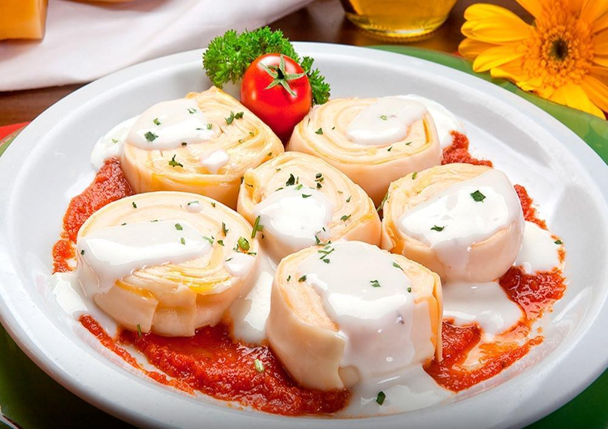

Rondelli

Descrição
Receita super simples de rondele/rondelli/rondelle/rondeli (sla) com molho branco. DELICIOSO.
Ingredientes
Para o rondelli em si e para o molho branco
- 1 pacote de massa para lasanha (aquela que não precisa cozinhar antes)
- 600g de presunto fatiado
- 700g de mussarela fatiada
- 1 lata de pomarola
- 1 caixinha de creme de leite (200g)
- 1 e 1/2 xícaras de leite (200g)
- 1 tablete de caldo de galinha
- 1 colher de sopa de amido de milho dissolvido em um pouco de leite
Modo de Preparo
Rondelli
- Forrar o fundo do pirex com a pomarola
- Colocar em uma superfície lisa e limpa uma "folha" da massa de lasanha (lembre-se de retirar o plástico que separa as massa), colocar por cima da massa 2 fatias de presunto e duas de mussarela.
- Dica: Colocar as fatias de presunto e mussarela de forma que cubram toda a massa de lasanha.
Enrolar a massa como se fosse um rocambole, bem apertadinho para não soltar
- Cortar o rolinho em tiras de 2 a 3 cm e colocar no pirex por cima da pomarola
- Fazer isso com toda a massa ou até cobrir todo o pirex com os rolinhos
Molho Branco
- Colocar o leite e o caldo de galinha na panela e levar ao fogo.
- Quando começar a ferver adicionar o amido de milho dissolvido e não parar de mexer até engrossar o molho.
- Desligar o fogo e acrescentar a caixinha de creme de leite e misturar bem.
- Colocar o molho branco por cima dos rolinhos no pirex, cobrir com mussarela e levar ao forno até dourar a mussarela.
- Servir em seguida!
E assim temos um delicioso rondelli.